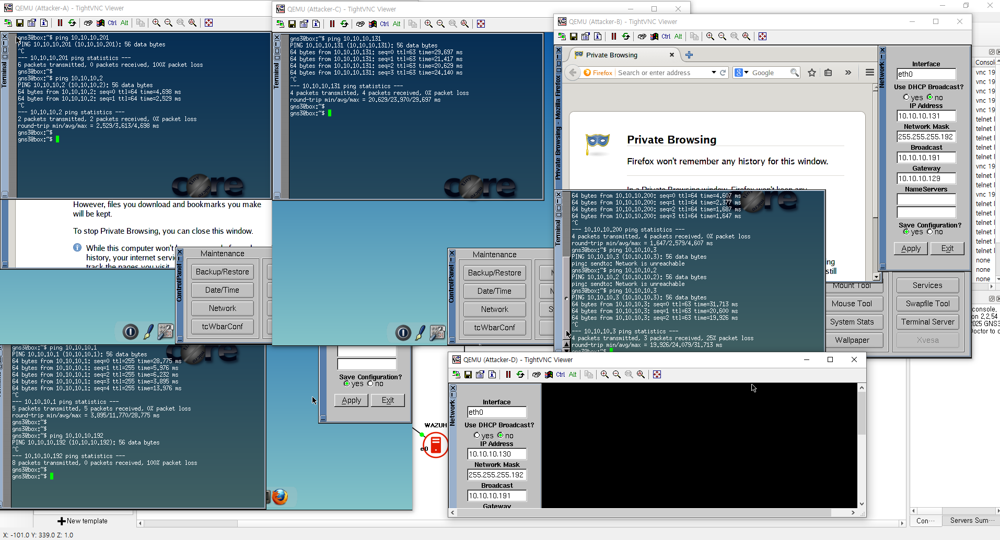

1. 방화벽 및 gns3
VLAN/접속/SSH/통신 검증 등 네트워크 인프라 구성 및 테스트
칼리에서 dns 서버로 핑가능
방화벽 및 gns3 — dns서버구축lsh1023.jpg

방화벽 및 gns3 — 칼리에서 dns 서버로 핑가능.PNG

방화벽 및 gns3 — 칼리에서 owasp로 핑차단.PNG
vlansetting

방화벽 및 gns3 — vlansetting.PNG